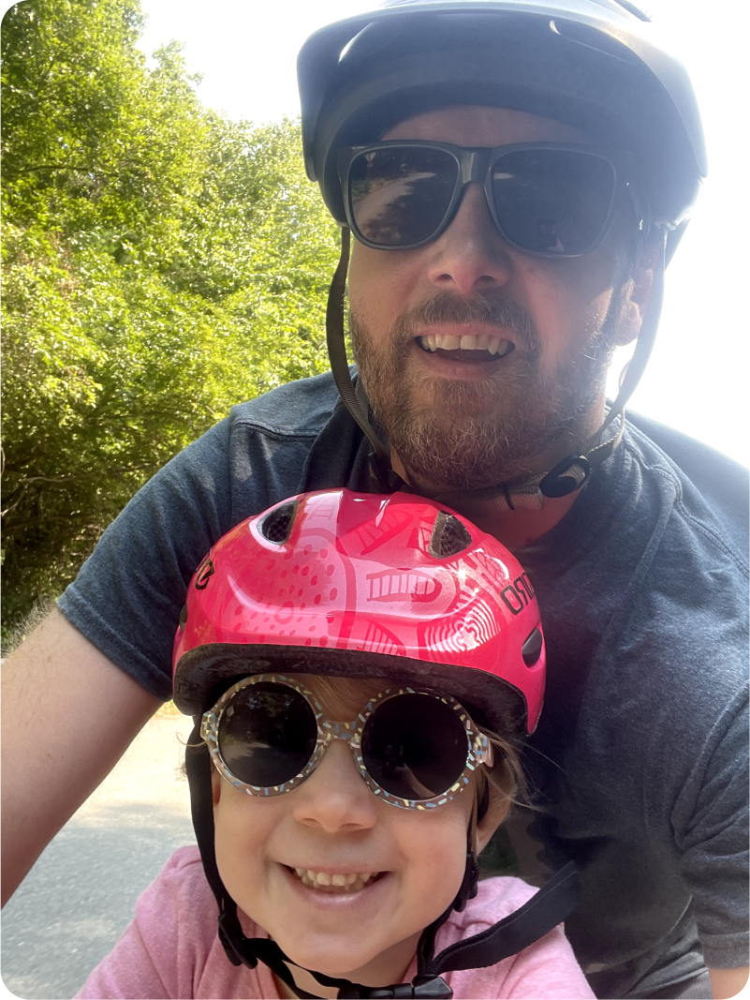

David Cade specializes in creating product experiences that cater to the diverse expectations of complex personas—from the technical precision required by data engineers to the analytical depth sought by data scientists, and the actionable insights needed by business analysts.
By fostering strong collaborations between Product, Engineering, and Executive teams, he drives innovation and elevates design quality.
David excels at conceptualizing new features and strategies, validating product assumptions, and pioneering scalable design solutions that enhance engineering efficiency and product scalability.
————
Designing scalable systems is a lot like riding a bike—you need balance, foresight, and the ability to adapt when things don’t go as planned, all while making the journey enjoyable for everyone involved.

Pioneered and led various design teams,
ranging from a small group of three to overseeing more than 15 designers across multiple teams, transforming the product design function into a world-class organization. My leadership roles have spanned globally across AMER, EMEA, and APAC, covering aspects of user experience design, visual design, and user experience research.
Conceptualized and executed UX strategies
and roadmaps, engaged in prototyping, Design Thinking, and customer interviews. Developed a comprehensive design system, contributed to the Product Leadership and Tech Leadership teams, and engaged with the Public Advisory Board.
Designed sophisticated user experiences
tailored to the technical demands of data science and business analytics. This included creating workflows for business analysts to enhance data exploration and transformation, significantly boosting the productivity and impact of data scientists.
Demonstrated a strong ability to collaborate
with Product and Engineering teams to deliver high-quality UI/UX. My tenure at DataRobot saw the company grow from 100 to nearly 2000 employees, during which I played a critical role in several product mergers, integrating technical assets and design teams into our core offerings.
Led innovative research projects
focused on merging industrial psychology with design approaches to enhance information visualization and decision support systems. This included pioneering work on novel input patterns, haptic response mechanisms, and other sensory tools for advanced R&D projects, including DARPA.
Acceldata | Staff Product Designer
May 2022 - Jan 2025 - 2 yrs 9 mo
At Acceldata, I led the UX strategy for its Data Observability Cloud Platform, designing intuitive dashboards and AI-powered tools to enhance data quality, performance, and visibility. I spearheaded the development of scalable solutions, including real-time monitoring, advanced data visualization, generative AI integrations, and Copilot experiences. By translating complex technical requirements into user-centric designs, I improved data discovery and usability, empowering enterprise teams to act quickly on real-time insights. Selected projects: Workflows, Mobile, and Copilot
Boulevard Labs | Staff Product Designer
Dec 2021 - May 2022 - 6 mo
At Boulevard Labs, I led design strategy for enhancing business and consumer-level booking experiences, streamlining appointment scheduling, client management, and payment workflows to drive business growth and customer satisfaction. Selected projects: Recommendations
DataRobot | Priniciple Product Designer
Feb 2017 - Nov 2021 - 4 yrs 9 mo
Led the design of AI/ML enterprise applications at DataRobot, shaping the user experience for MLOps, AI Catalog, Feature Discovery, and Visual Data Prep. Focused on simplifying workflows for data scientists, driving intuitive interactions across model training, deployment, and monitoring. Played a key role in scaling the design organization, mentoring designers, and contributing to the company’s rapid growth from 100 to nearly 2,000 employees. Selected project: Data Prep, Feature Discovery, Augmented Decision Support
Oracle Big Data Discovery | Priniciple Product Designer
Mar 2014 - Feb 2017 - 2 yrs 11 mo
Designed intuitive user experiences for Oracle’s Big Data Discovery platform, enabling data scientists, engineers, and business analysts to explore and transform data seamlessly. Developed workflows that streamlined data discovery through advanced search and visualization techniques. Created hybrid code/no-code interfaces, making data wrangling accessible to non-technical users.
more on LinkedIn